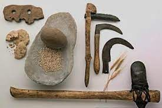
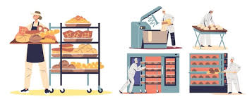

Se conoce como panadería al recinto donde se produce y/o se comercializa el pan. El término también alude al oficio del sujeto dedicado a la elaboración de este producto. Cabe destacar que el pan es un alimento que se prepara cocinando una masa de harina, agua y, por lo general, levadura.
El pan nació gracias al azar. Un olvidadizo hombre en el periodo neolítico hizo una papilla con semillas y cereales y, sin querer, la dejó expuesta al sol. Al regresar, encontró una torta granulada, seca y aplastada que, según dicen los estudiosos, fue la primera manifestación de este delicioso alimento.
Las etapas utilizadas en el proceso de elaboración tradicional de pan son: amasado, división, boleado, formado, fermentación, reposo y horneado. - Amasado: Se trata de mezclar de forma homogénea los ingredientes básicos (agua, harina, sal y levadura) hasta formar una masa flexible y elástica.
